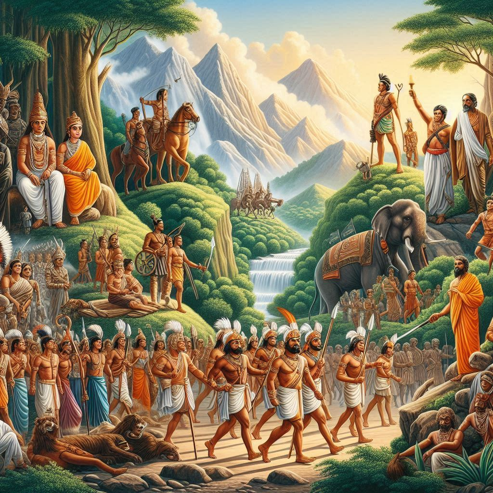
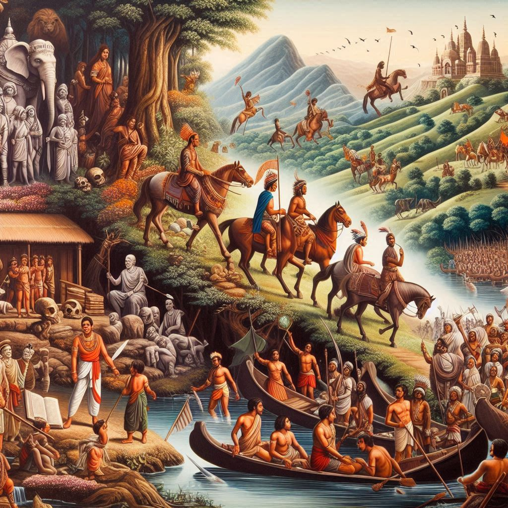

History of Jharkhand:
Jharkhand, which translates to "The Land of Forests," has a rich history rooted in its tribal heritage, ancient kingdoms, and modern industrial development. The region has been home to numerous indigenous tribes for centuries, and its history can be traced through different periods of rule, struggle, and development.
1. Ancient and Medieval History:
- Early Settlements: Jharkhand's history dates back to prehistoric times. Evidence of ancient human settlements and rock paintings have been discovered in places like Hazaribagh, Singhbhum, and Santhal Parganas, showcasing its long-standing tribal habitation.
- Magadha and Maurya Period: The region was part of the powerful Magadha Empire and later came under the influence of the Mauryan Empire, which left a significant mark on its culture and development. Ashoka's reign saw the spread of Buddhism and influenced tribal and regional practices.
- Medieval Kingdoms: Over the centuries, Jharkhand was ruled by various local kings, including the Nagvanshis, Chero, and Munda kings. These rulers maintained their influence over their tribes, fighting external influences while preserving local culture and traditions.
2. Mughal and British Era:
- Mughal Rule: During the Mughal period, Jharkhand was referred to as "Kukara." Though the region was nominally under Mughal control, it maintained relative independence due to its challenging terrain and strong tribal resistance.
- British Colonial Rule: The British annexed Jharkhand in the 18th and 19th centuries. The colonizers exploited its vast mineral resources and forest wealth, leading to economic changes and significant displacement and oppression of local tribes.
- Revolts and Struggles: Jharkhand witnessed numerous revolts against British rule, primarily led by its indigenous tribes. The Santhal Rebellion (1855–56), led by Sidhu and Kanhu Murmu, was a major uprising against oppressive land policies. The Birsa Munda Rebellion (1899–1900), led by the revered tribal leader Birsa Munda, aimed at ending British exploitation and restoring tribal rights. Birsa is remembered as a hero and is a symbol of Jharkhand’s identity and pride.


3. Formation of Jharkhand Movement:
- Post-Independence Struggles: After India's independence, the tribes and people of Jharkhand continued to demand a separate state due to social, cultural, and economic neglect. The Jharkhand Mukti Morcha (JMM), led by leaders like Shibu Soren, became a prominent voice advocating for statehood.
- Formation of Jharkhand: On November 15, 2000, Jharkhand was carved out of Bihar, becoming India’s 28th state. This day also commemorates the birth anniversary of Birsa Munda.
4. Modern Jharkhand:
Jharkhand today is known for its rich mineral wealth, industrial development, and its blend of tribal and non-tribal cultures. The state faces challenges such as economic disparity, poverty, and resource exploitation but continues to build on its diverse heritage and industrial potential.
5.Cultural Heritage:
Jharkhand’s history is deeply tied to its tribal customs, festivals, and a legacy of resilience. The state's traditional dances, songs, and crafts reflect the rich heritage passed down through generations. Its tribal identity remains integral to Jharkhand’s historical narrative, making it a unique and culturally rich state within India.